单聊：收发消息
本章介绍和一位同事一对一聊天时用到的单聊窗口：窗口上每个按钮的作用、怎样发送和接收文字消息、插入表情、使用快捷回复、调整字体，以及发送窗口抖动提醒对方。
- 适用：全体员工
- 需要：已登录
- 窗口抖动仅单聊可用
打开单聊窗口
在主面板的通讯录里双击一位联系人，或在会话列表里双击一个单聊会话，就会打开与对方的单聊窗口。同一位同事只会有一个单聊窗口，再次双击会把已打开的窗口调到前面。通讯录与会话列表的用法见「通讯录与联系人」和「会话列表与消息提醒」。
认识单聊窗口
单聊窗口从上到下分为头部、消息区、输入工具栏和输入框。对方的头像和名字显示在标题栏上，头部左侧是对方的在线状态与个性签名，右侧是一排功能按钮；输入框上方的工具栏放着发送各类内容的按钮。
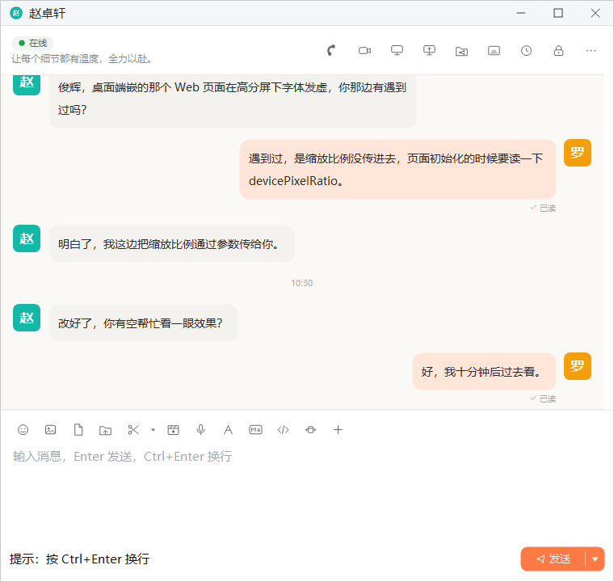
1 2 3 4 5 6 7 8 9 10 11 12 13 14 15 16 17 18 19 20 21 22 23 24 25 26标题栏与头部
- 对方的头像与名字：显示在标题栏上
- 在线状态与签名：对方正在输入时，状态会变成「正在输入…」；点击这一块打开对方的资料
- 语音通话：见语音与视频通话
- 视频通话：见语音与视频通话
- 远程桌面：向对方发起远程桌面，见远程桌面
- 共享屏幕：见屏幕共享
- 文件共享：查看和发起本会话的共享，见文件共享
- 字幕模式：再点一次退出，见字幕模式与字幕编辑
- 消息记录：打开与对方的历史消息，见聊天记录管理
- 密聊（挂锁图标）：见密聊
- 更多：暂未开放
输入工具栏与发送按钮
- 表情：插入图片表情，见本章「表情」
- 图片：选一张图片发送，见图片、文件与文件夹
- 发送文件：见发送文件
- 发送文件夹：见发送文件夹
- 截图（剪刀，Alt+Z）：见截图与图片文字识别
- 截图选项（剪刀旁的 ▾）：截取全屏、截图时隐藏当前窗口
- 屏幕录制：见屏幕录制
- 语音消息：见语音消息
- 字体设置：见本章「字体设置」
- Markdown 编辑器：见Markdown 文档
- 发送代码：见代码片段
- 窗口抖动：见本章「窗口抖动」
- 更多功能：暂未开放
- 发送：发出输入框里的内容
- 发送选项（▼）：快捷回复与发送键设置，见本章「快捷回复与发送键」
鼠标停在任意一个图标按钮上，都会显示它的名称。
发送文字消息
- 点一下输入框。输入框为空时显示提示文字「输入消息，Enter 发送，Ctrl+Enter 换行」。
- 输入要说的话。需要换行时按 Ctrl+Enter，窗口左下角也会提示「按 Ctrl+Enter 换行」。
- 按 Enter 或点右下角的 发送，消息就会出现在消息区右侧。
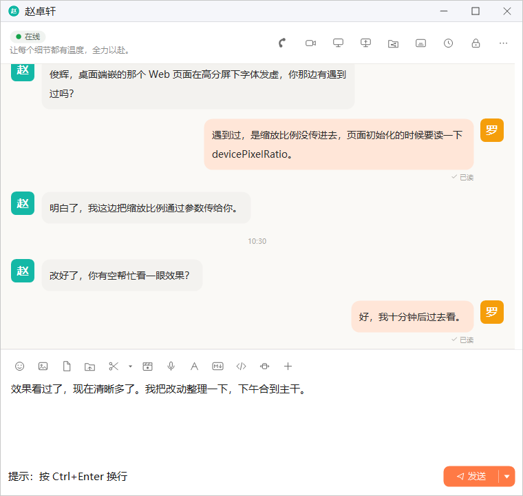
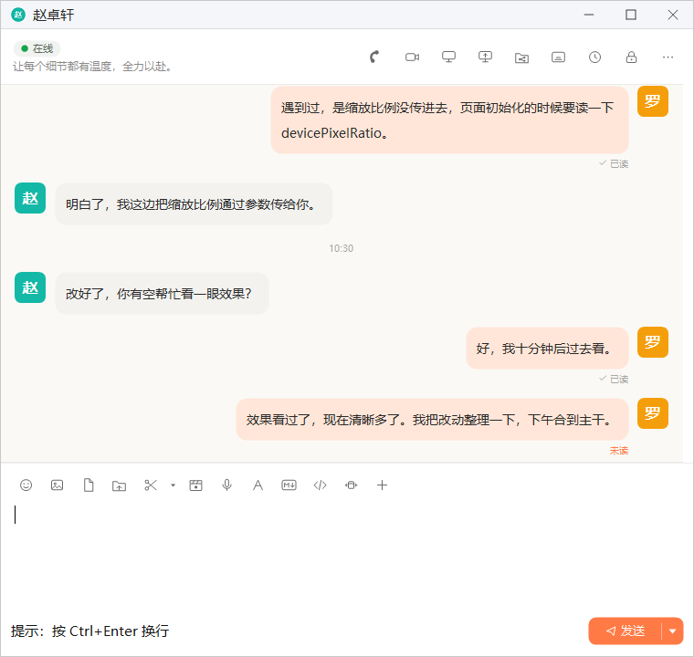
你发出的每条消息下方都会显示对方是否已经看过：对方还没看时显示橙色的 未读，看过之后变成灰色的 已读。
对方发来的消息显示在消息区左侧，带有对方的头像。对方在输入框里打字时，你这边头部的在线状态会暂时变成「正在输入…」，对方停止输入后恢复。
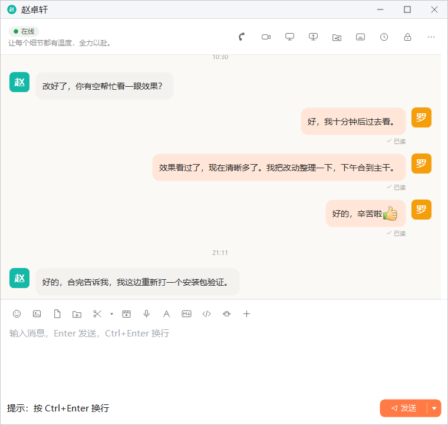
快捷回复与发送键
点 发送 按钮右侧的 ▼，会弹出发送选项菜单：
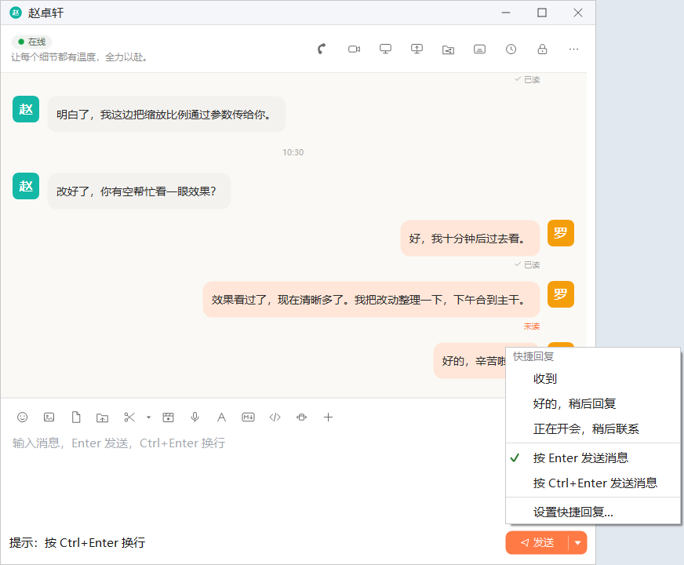
- 快捷回复：默认有 收到、好的，稍后回复、正在开会，稍后联系 三条。点其中一条就会立即发给对方，输入框里正在写的内容不受影响。
- 发送键：在 按 Enter 发送消息 和 按 Ctrl+Enter 发送消息 之间选择，当前使用的一项前面带勾。
- 设置快捷回复…：打开系统设置的「聊天」页，修改三条快捷回复的文字，见「系统设置」。
表情
点工具栏的 表情 按钮，会弹出一个包含 143 个图片表情的面板。鼠标停在某个表情上可以看到它的名称，点一下就会把它插入输入框光标处。
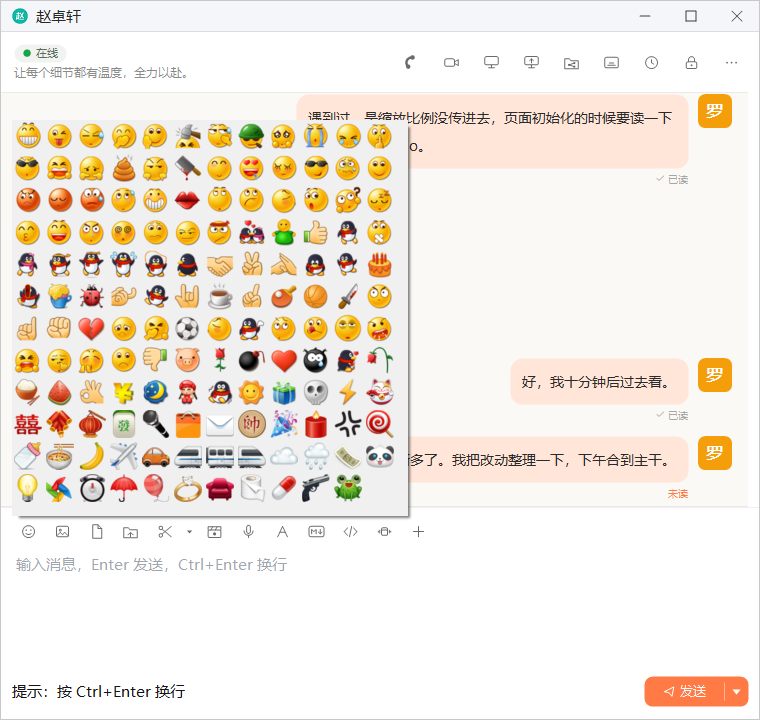
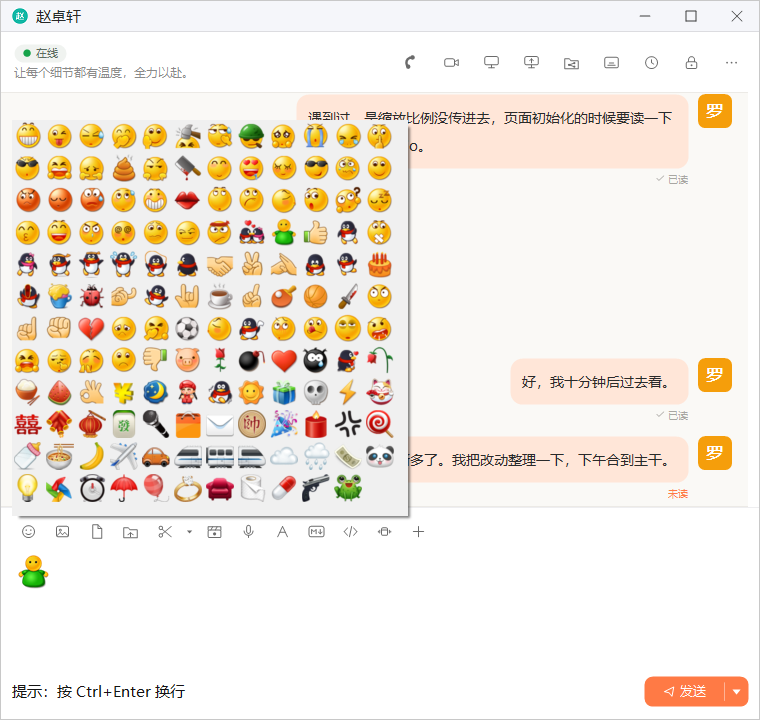
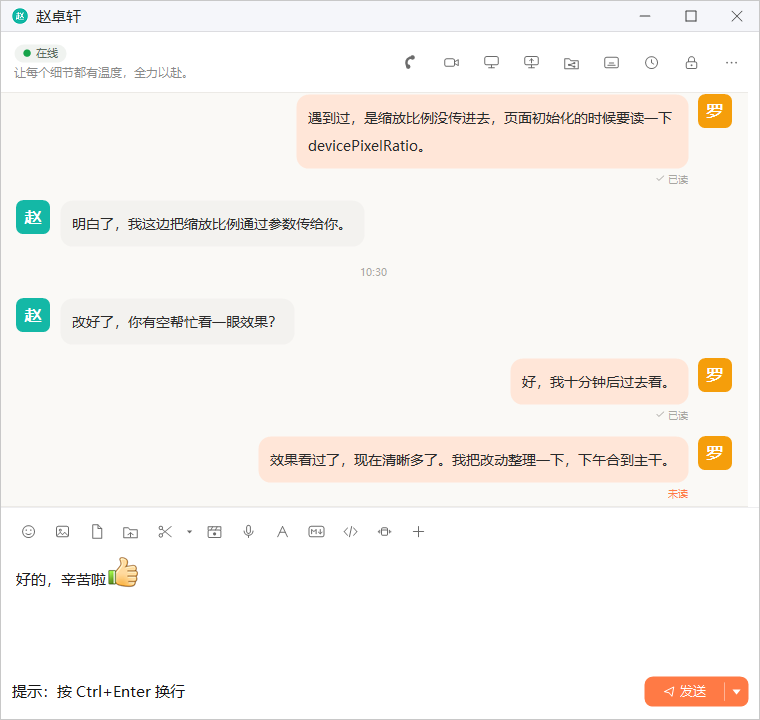
表情面板在点选后保持打开，方便一次插入多个表情。选完后按 Esc 或点面板以外的地方即可关闭。
字体设置
点工具栏的 字体设置 按钮（「A」形图标），在弹出的面板里调整你发出的文字的样式：
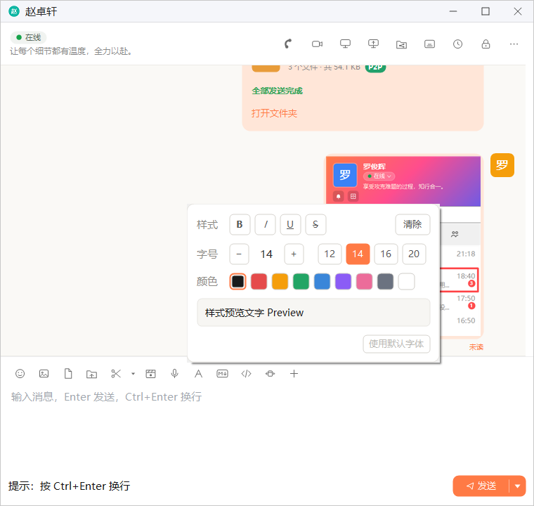
| 项目 | 说明 |
|---|---|
| 样式 | 加粗、斜体、下划线、删除线，可以同时选多个；清除 取消全部样式 |
| 字号 | 用 − / + 逐级调整，或直接点 12、14、16、20 |
| 颜色 | 九种文字颜色 |
| 预览 | 「样式预览文字 Preview」按当前设置显示效果 |
| 使用默认字体 | 放弃本会话的设置，改回默认字体 |
修改立即生效：输入框里的文字马上按新样式显示，之后发出的文字消息也带着这些样式，对方看到的效果相同。这里的设置只对当前这个会话有效，关闭窗口、重启客户端后仍然保留。想让所有会话都使用同一种字体，可以在系统设置的「聊天」页设置「默认聊天字体」，见「系统设置」。
窗口抖动
对方迟迟没有回复时，可以点工具栏的 窗口抖动 按钮提醒对方。对方的单聊窗口会弹到屏幕最前面并抖动几下；你这边的窗口也会抖动一下，双方的消息区都会出现一行系统提示。
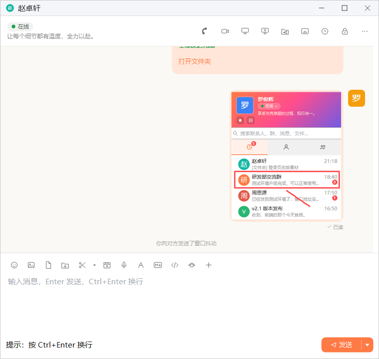
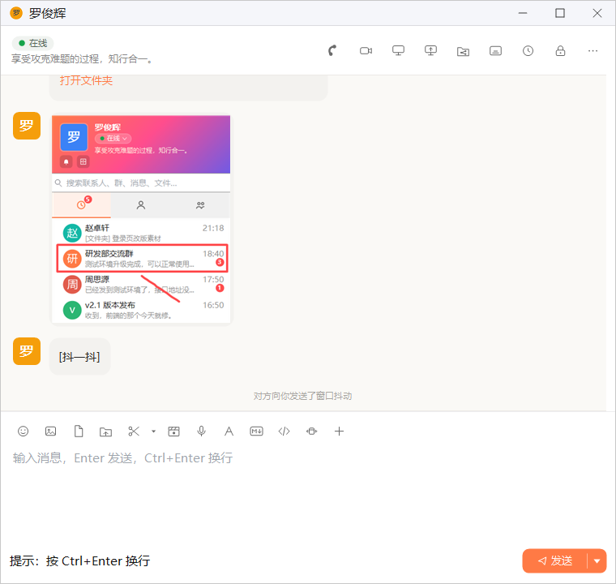
拖入文件与粘贴代码
- 拖入文件或文件夹：把文件或文件夹从资源管理器直接拖到输入框里松开，就会发给对方，效果与点 发送文件、发送文件夹 相同，详见「图片、文件与文件夹」。注意要拖到输入框上，拖到消息区不会发送。
- 粘贴一段代码：往空的输入框里粘贴一段看起来像代码的文字时，输入框上方会出现提示条「看起来是一段代码」，点 以代码片段发送 会把内容移到「发送代码」窗口，按代码片段发送；点 不用了 或继续输入，提示条就会消失，照常按文字发送。代码片段的用法见「代码片段」。